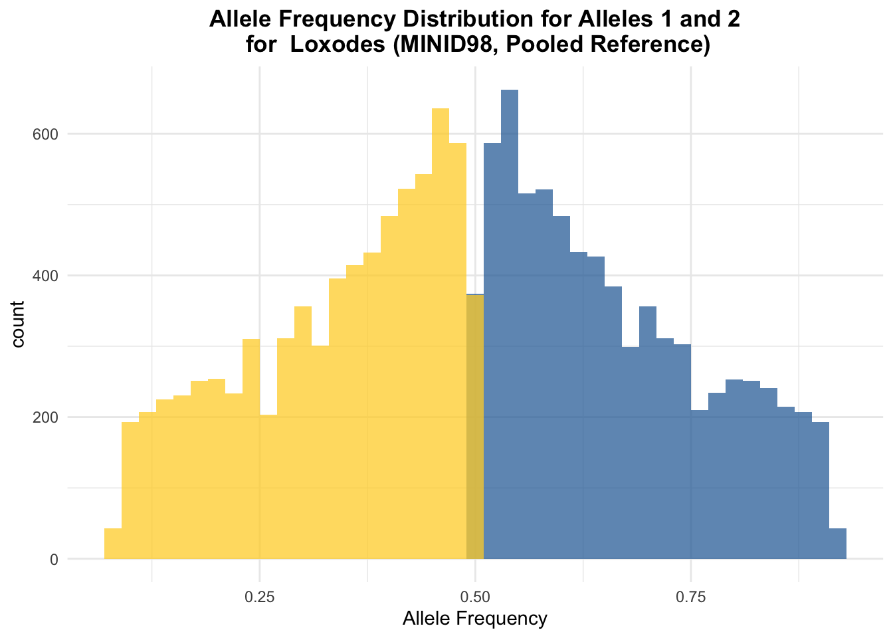
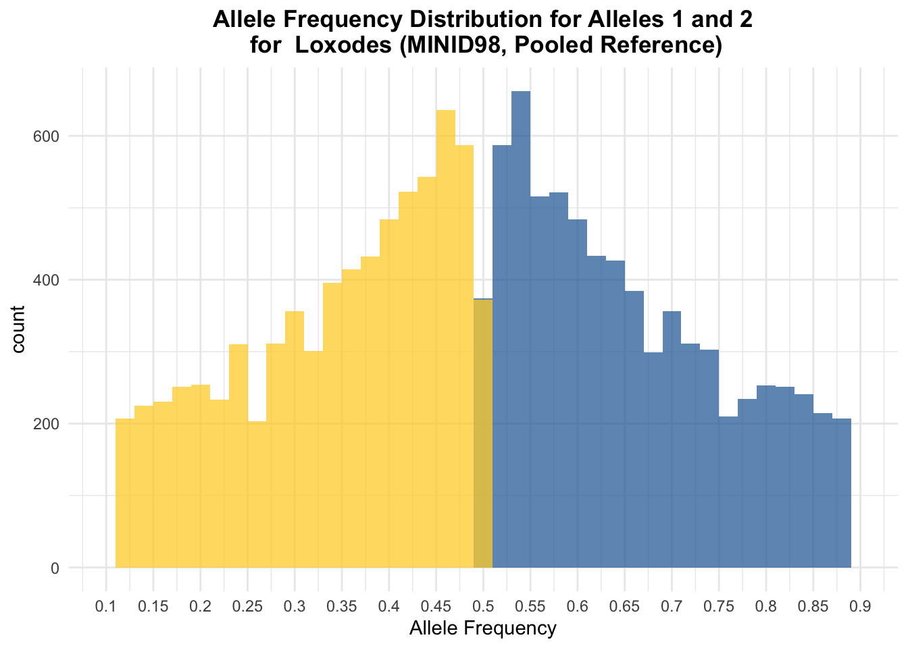
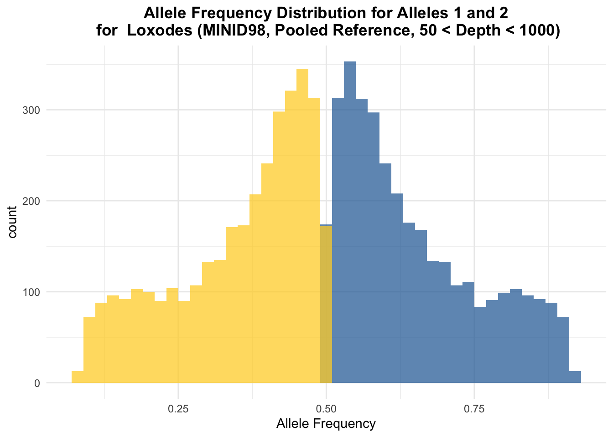
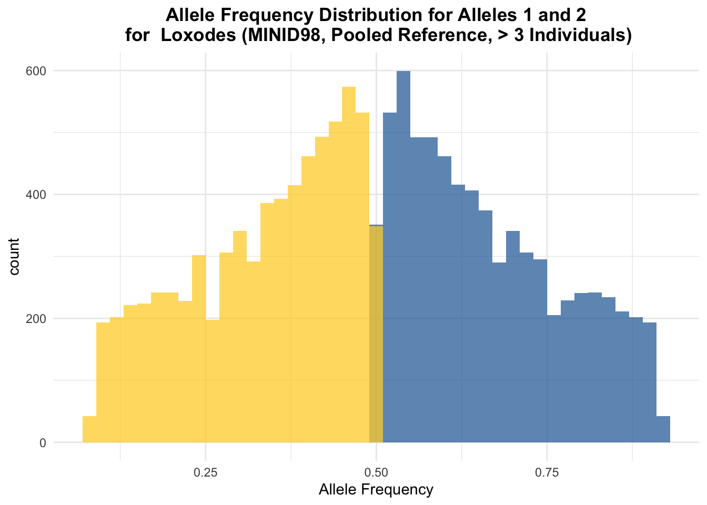

Ploidy Tutorial
First, load the needed libraries and read in the vcf file as a vcfR object.
library(tidyverse)
library(vcfR)
loxodes_pooled_98_10 <- read.vcfR("./Data/loxodes_pooled/all_filtered_98.vcf")The function get_AB_plot takes a vcfR object as a mandatory argument, the optional argument sample_name, and the optional argument num_samples. The sample name argument includes the given information in the title of the plot. If no sample name (ex: Loxodes (MINID98, Pooled Reference)) is provided, the title will not include the sample name. The num_samples argument filters based on the NS information in the vcf. NS represents the number of samples with data for a particular site. Thus, a higher NS value indicates less missing data for a variant site. This can be a useful filtering criterion.
#takes the vcfR object, an optional user argument of the minimum number of samples with data for a variant site to be included, and the sample_name argument (information you want included in the title)
#plots allele balance between the top 2 most abundant alleles
get_AB_plot <- function(vcf, sample_name = "", num_samples = 0) {
ad <- extract.gt(vcf, element = 'AD')
gt <- extract.gt(vcf, element = 'GT')
vcf_tidy <- vcfR2tidy(vcf, single_frame = TRUE,
info_types = TRUE,
format_types = TRUE)[["dat"]]
vcf_tidy <- vcf_tidy %>% mutate(ID = paste(CHROM, POS, sep = "_"))
vcf_filtered <- vcf_tidy %>% filter(NS >= num_samples) %>% pull(ID)
#remove homozygous sites so they don't overwhelm the plot
hets <- is_het(gt)
is.na( ad[!hets] ) <- TRUE
ad1 <- masplit(ad, record = 1)
ad2 <- masplit(ad, record = 2)
ab1 <- ad1 / (ad1 + ad2)
ab2 <- ad2 / (ad1 + ad2)
ab1 <- as_tibble(ab1, rownames = "SITE") %>%
pivot_longer(cols = c(2:ncol(ab1)),
names_to = "name",
values_to = "AF") %>%
filter(SITE %in% vcf_filtered)
ab2 <- as_tibble(ab2, rownames = "SITE") %>%
pivot_longer(cols = c(2:ncol(ab2)),
names_to = "name",
values_to = "AF") %>%
filter(SITE %in% vcf_filtered)
ggplot() +
geom_histogram(data = ab1,
aes(x = AF),
fill = "#3271a8",
alpha = .75,
binwidth = .02) +
geom_histogram(data = ab2,
aes(x = AF),
fill = "#FFD333",
alpha = .75,
binwidth = .02) +
labs(title = paste("Allele Frequency Distribution for Alleles 1 and 2\n for ", sample_name),
x = "Allele Frequency") +
theme_minimal() +
theme(plot.title = element_text(face = "bold",
hjust = .5))
}Once the function is loaded, it can be run for any vcfR object.
get_AB_plot(loxodes_pooled_98_10, sample_name = "Loxodes (MINID98, Pooled Reference)")
get_AB_plot(loxodes_pooled_98_10, sample_name = "Loxodes (MINID98, Pooled Reference, NS Filter 3)", num_samples = 3)
Since the function returns a ggplot object, you can add on any modifications to the plot after calling the function. For example, you may want the x axis to show more intervals, or to add vertical lines corresponding to the peaks of the plot. Here we add more breaks to the x axis.
get_AB_plot(loxodes_pooled_98_10,
sample_name = "Loxodes (MINID98, Pooled Reference)") +
scale_x_continuous(limits = c(.1, .9),
breaks = seq(0, 1, by = .05),
labels = seq(0, 1, by = .05))
Filtering based on depth is also something to explore. This function allows the user to input a minimum read depth and maximum read depth for a site to be considered.
The read depth for a site is considered the average across all individuals.
It’s good to experiment with different values to see what effect they have on your analyses. A very low read depth can indicate a low expression level or a lack of support for a variant. Meanwhile, a very high read depth can indicate a high expression level or incorrect mapping of the reads of a recent paralog.
#takes mandatory argument vcfR object and optional arguments sample_name, mindepth, and maxdepth
#plots the allele balance between the top 2 most abundant alleles with the given filtering criteria
get_AB_filtered_depth <- function(vcf, sample_name = "", mindepth = 0, maxdepth = 10^18){
ad <- extract.gt(vcf, element = 'AD')
gt <- extract.gt(vcf, element = 'GT')
dp <- extract.gt(vcf, element = 'DP')
dp <- dp %>% as_tibble(rownames = "SITE") %>%
pivot_longer(cols = c(2:(ncol(dp) + 1)), names_to =
"Sample", values_to = "DP")
filtered <- dp %>%
group_by(SITE) %>%
summarize(mean_DP = mean(as.numeric(DP), na.rm = TRUE)) %>%
filter(mean_DP >= mindepth & mean_DP <= maxdepth)
#remove homozygous sites so they don't overwhelm the plot
hets <- is_het(gt)
is.na( ad[!hets] ) <- TRUE
ad1 <- masplit(ad, record = 1)
ad2 <- masplit(ad, record = 2)
ab1 <- ad1 / (ad1 + ad2)
ab2 <- ad2 / (ad1 + ad2)
ab1 <- as_tibble(ab1, rownames = "SITE") %>%
pivot_longer(cols = c(2:ncol(ab1)),
names_to = "name",
values_to = "AF") %>%
filter(SITE %in% pull(filtered, SITE))
ab2 <- as_tibble(ab2, rownames = "SITE") %>%
pivot_longer(cols = c(2:ncol(ab2)),
names_to = "name",
values_to = "AF") %>%
filter(SITE %in% pull(filtered, SITE))
ggplot() +
geom_histogram(data = ab1,
aes(x = AF),
fill = "#3271a8",
alpha = .75,
binwidth = .02) +
geom_histogram(data = ab2,
aes(x = AF),
fill = "#FFD333",
alpha = .75,
binwidth = .02) +
labs(title = paste("Allele Frequency Distribution for Alleles 1 and 2\n for ", sample_name),
x = "Allele Frequency") +
theme_minimal() +
theme(plot.title = element_text(face = "bold",
hjust = .5))
}Here we see how the allele frequency distribution changes when we use a minimum depth threshold of 50 and maximum depth threshold of 1000.
get_AB_filtered_depth(loxodes_pooled_98_10,
sample_name = "Loxodes (MINID98, Pooled Reference, 50 < Depth < 1000)",
mindepth = 50,
maxdepth = 1000)
It can also be useful to filter based on the number of individuals that support a variant. A paper by Chen et al found that sites supported by 3 or more individuals were reliable.
#takes the mandatory argument of the vcfR object and the optional argument of the minimum number of samples (individuals) supporting a site for it to be kept
#returns a vector of sites supported by greater than or equal to the given number of individuals
get_filtered_sites <- function(vcf, min_samples = 3){
#extract allele depth information for each site
ad <- extract.gt(vcf, element = 'AD')
samples <- ad %>%
as_tibble(rownames = "ID") %>%
pivot_longer(cols = 2:(ncol(ad) + 1), names_to = "Sample") %>%
#filter out rows corresponding to individuals that lack data for a site
filter(is.na(value) == FALSE) %>%
group_by(ID) %>%
summarize(num_samples = n()) %>%
#only keep sites supported by the minimum threshold given or greater
filter(num_samples >= min_samples) %>%
pull(ID)
}Once we have the vector of sites, we can use the following function to generate the allele balance plots.
#takes mandatory argument vcfR object, optional argument sample_name (information to be included in the title), and vector of filtered_sites (generated by the function get_filtered_sites)
get_AB_filtered_individuals <- function(vcf, sample_name = "", filtered_sites){
ad <- extract.gt(vcf, element = 'AD')
gt <- extract.gt(vcf, element = 'GT')
#remove homozygous sites so they don't overwhelm the plot
hets <- is_het(gt)
is.na( ad[!hets] ) <- TRUE
ad1 <- masplit(ad, record = 1)
ad2 <- masplit(ad, record = 2)
ab1 <- ad1 / (ad1 + ad2)
ab2 <- ad2 / (ad1 + ad2)
ab1 <- as_tibble(ab1, rownames = "SITE") %>%
pivot_longer(cols = c(2:ncol(ab1)),
names_to = "name",
values_to = "AF") %>%
filter(SITE %in% filtered_sites)
ab2 <- as_tibble(ab2, rownames = "SITE") %>%
pivot_longer(cols = c(2:ncol(ab2)),
names_to = "name",
values_to = "AF") %>%
filter(SITE %in% filtered_sites)
ggplot() +
geom_histogram(data = ab1,
aes(x = AF),
fill = "#3271a8",
alpha = .75,
binwidth = .02) +
geom_histogram(data = ab2,
aes(x = AF),
fill = "#FFD333",
alpha = .75,
binwidth = .02) +
labs(title = paste("Allele Frequency Distribution for Alleles 1 and 2\n for ", sample_name),
x = "Allele Frequency") +
theme_minimal() +
theme(plot.title = element_text(face = "bold",
hjust = .5))
}Here is an example call to these functions with the Loxodes data.
lox_sites <- get_filtered_sites(loxodes_pooled_98_10, min_samples = 3)
get_AB_filtered_individuals(loxodes_pooled_98_10, sample_name = "Loxodes (MINID98, Pooled Reference, > 3 Individuals)", filtered_sites = lox_sites)
Keep in mind the patterns we see may not always be clear for complex organisms like ciliates. Elements of their biology - such as endopolyploidy - can complicate these analyses. However, getting a glimpse of the balance between the top two most abundant alleles provides useful information about an organism.